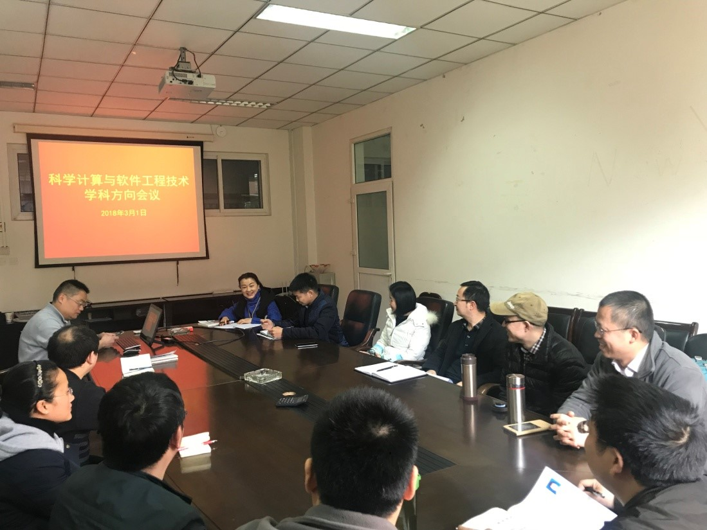

科学计算与软件工程技术方向召开新学期第一次会议
3月1日下午，新学期伊始，计算机学院科学计算与软件工程技术学科方向召开了2017-2018-2学期第一次会议，会议由学科方向带头人刘志勤教授主持。
刘志勤教授首先就副院长吴亚东教授针对本科人才培养所做的报告进行了重点提示，强调了评估与认证的重要性以及与每位教师的关联性，并希望老师们能以评估与认证的要求提升自我能力，并积极配合学院完成相关任务。
会上，刘志勤教授对上学期末布置的工作进行了检查，并对新学期教学、科研、实验室建设等重点工作提出了要求与期望。要求老师们针对学校、学院2018重点工作，制定个人发展规划、年度学术报告等具体任务。之后，老师们就教学、科研中遇到的问题进行了热烈的讨论分析。

会议最后，刘志勤教授以自己作为评审专家的亲身经历再次要求大家：以严谨求实的态度做好科研，以认真负责的态度做好教学，大家齐心合力建设一个积极向上、蓬勃朝气的学科方向团队。